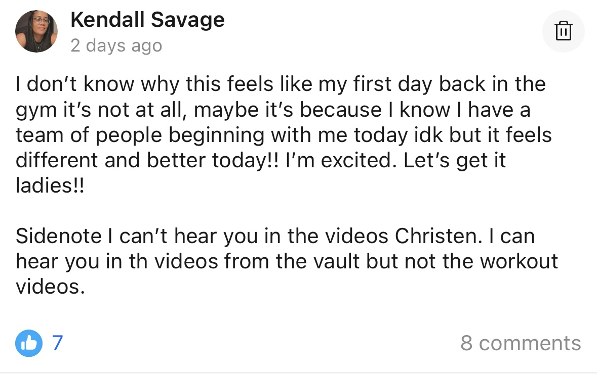
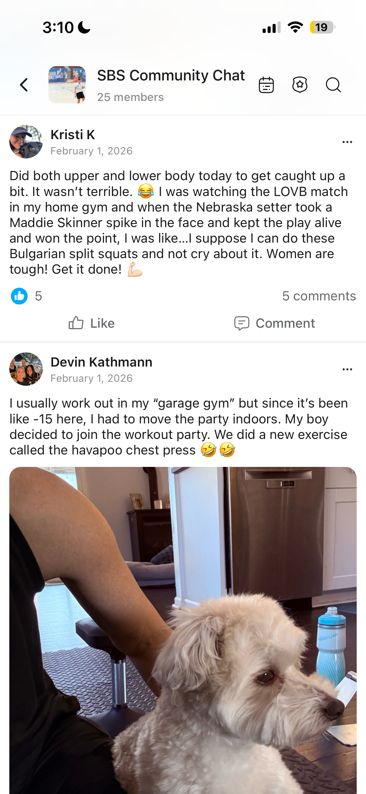

Meet Who's Already Inside


I recently lost 100 pounds and I'm starting to realize I can actually change my body. My friend gifted me court-side seats to a few WNBA games and I fell in LOVE! I saw the WNBA players' physiques and told my trainer I need WNBA arms. Now I'm ready for the BODY!
Our Community Chat Is Everything
Sneakers, game takes, PRs, polls, and milestones. We talk all of it.








I'm constantly inspired by female athletes and their commitment to show up for themselves and not being shy about being strong. Hello, Jackie Young and my Aces!